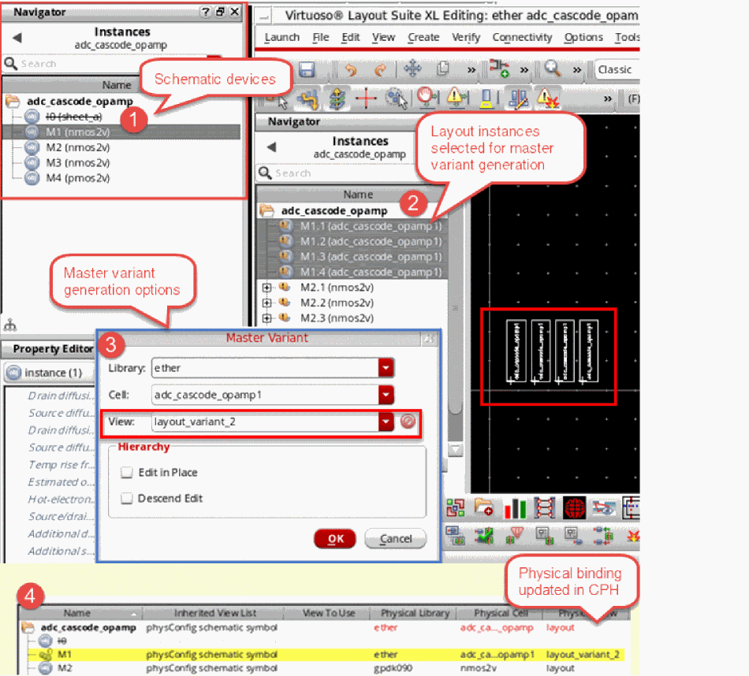

Generating Master Variants
In the Layout XL connectivity-driven flow, by default, there is only one layout view supported for a symbol or schematic view. But, the same schematic logic topology may need to be generated using a different layout topology, requiring the creation of another layout variant. You can do this by generating a copy of the instance master and manually editing the specific occurrence of the instance to create a new variant.
If the layout variant is needed for Pcells, you can use the Freeze Pcell command.
If the layout variant is needed for nonparameterized cells, you can use the Master Variant command.
The Master Variant command uses the existing logic topology to create a variation or a variant of the existing layout, which has the schematic correspondence already in place, as displayed in the figure below. This makes master variant generation a quicker option compared to manually copying the cell, remastering it, and ensuring that the schematic and the layout instances bind, if the selected instance is not already bound. If you manually bind the remastered instance such that the schematic and layout instance masters are different, you may need to update the physical binding of the remastered instances.
When creating a master variant for a transparent instance, the physical binding is automatically updated in CPH although the instance remains unbound.
To update the physical binding on selected instances:
-
Right-click the remastered instances and choose Update – Physical Bindings from the shortcut menu.

If a layout variant already exists for an instance, you can use that as the source for the master variant generation. In this case, the cellview that is selected to form the variant view becomes the new master.
For an existing view to be used as the new master, the master variant must have all the same instance terminals as the source, although the master variant can have additional instance terminals as well.
If the variant view does not already exist in a design library, a new master variant cellview is created on disk, which is a copy of the original master. By default, the first variant view that gets created for an instance is named as layout_variant_1. Any subsequent new variants added get incremental names layout_variant_2, layout_variant_3, and so on.
You can give the layout variant a name of your choice. You can also change the default library and cell to be used for the master variant generation to a library and cell of your choice.
After you have generated the variant, say instance M1, in the figure below, you can individually update that instance without impacting the other instances, M2, M3, and so on.
In addition, any updates that you make to the master variant are automatically saved in the physConfig view, and can be verified using the Configure Physical Hierarchy Window, as displayed in the figure below.
By default, any updates made to the phsyConfig view by Layout XL commands are automatically saved in CPH. But, you can choose to set the autoMirrorFilter to nil to prevent such automatic updates from being saved in CPH.
Any manual edits made to the CPH instance master are not automatically saved even when autoMirrorFilter is set to t. These updates must be manually saved in the CPH window.
The figure below illustrates the basic master variant generation flow, assuming the master view already exists.
Related Topics
Return to top